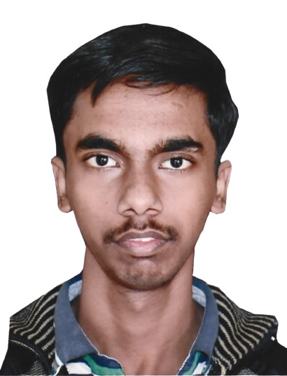

Society for Bioinformatics and Biological Sciences (SBBS), is a non-profit professional scientific society registered at Prayagraj, under Indian Societies Registration Act 21, 1860. It is an interdisciplinary society dealing with Bioinformatics, Biotechnology, Biological sciences, Computational Biology, Genomics, Proteomics, Agri-Informatics, Animal-Veterinary Sciences, Chemoinformatics, Pharmacology, Pharmaceutical Science and Nanotechnology. SBBS serves as a forum for networking, information sharing, idea exchange and problem solving for the Bioinformatics, Biological Science and Biotechnology community. SBBS members include scientist, faculty members, experienced software development engineers, and university postgraduate and undergraduate students, etc. The aims and objectives of the society includes to diffuse scientific knowledge, to arrange and conduct seminars, workshops, conference, to offer prizes, awards, to promote and utilize Indigenous Technical Knowledge (ITK), to create awareness about Intellectual Property Rights (IPR) and to provide formal and operational links with center of knowledge creation such as; National R&D Laboratories, Universities, Medical Institutions, Research Organizations, and Eminent Individuals / Scientists in India and abroad. It is a non-profit professional society dedicated to the advancement of Bioinformatics and Biological Sciences. SBBS serves as a forum for networking, information sharing, idea exchange and problem solving for the Bioinformatics and Biological Science community. SBBS promote the exchange of ideas, infrastructure and resources in the fields of Bioinformatics and Biological Sciences and facilitate the interaction and collaboration among Scientists and Educators around the world. SBBS members include scientist, faculty members, experienced software development engineers, and university postgraduate and undergraduate students, etc. The goals are to promote the co-operation between the professionals in various fields of the Biological Sciences and to cultivate an environment for the advance and development of the new bioinformatics approaches.
National E-Conference on “Frontiers in Agricultural, Veterinary and Biological Sciences- FAVBS 2025”
National e-Conference on Emerging Trends in Agricultural and Biological Sciences, SK University of Agricultural Sciences and Technology of Jammu, R.S. Pura, Jammu.
Current Trends in Diagnostic Approaches for Diagnosis of Important Livestock Diseases (Webinar), Veterinary Medicine, COVAS, SVPUAT, Meerut.
One Health Initiative in Addressing Public Health Issues in the Present Pandemic Situation (Webinar), Veterinary Medicine COVAS, SVPUAT, Meerut.
International E-Conference on Agricultural & Biological Sciences, I-E-CABS 2020, SK University of Agricultural Sciences and Technology of Jammu, R.S. Pura, Jammu.
International Conference on “Advances and Innovations in Biotechnology for Sustainable Development (AIBioSD-2019)” AKS University, Satna.
International Conference on “Recent Trends in Bioinformatics and Biotechnology for Sustainable Development”, Sher-e-Kashmir University of Agricultural Sciences and Technology of Jammu, Jammu.
National Conference on Bioinformatics Panorama in Agriculture and Health (NCBPAH-2015) , sponsored by DBT, DST, Govt. of India., Biovia and Schrodinger. SHIATS, Allahabad, Uttar Pradesh.
President
Secretary
Treasurer
Technical Officer
Joint-Technical Officer

Joint-Technical Officer